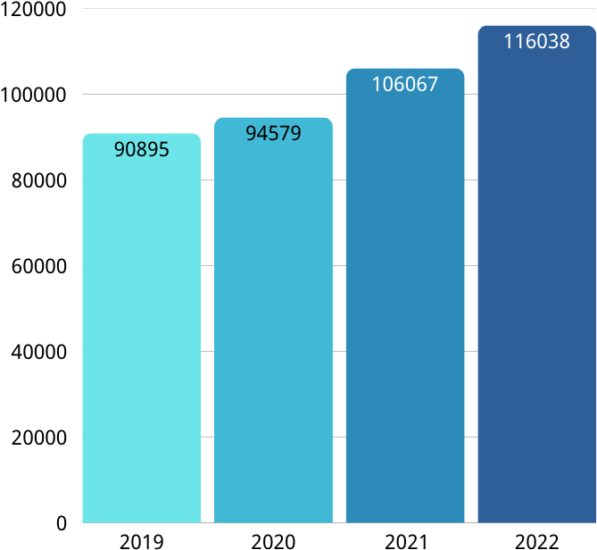
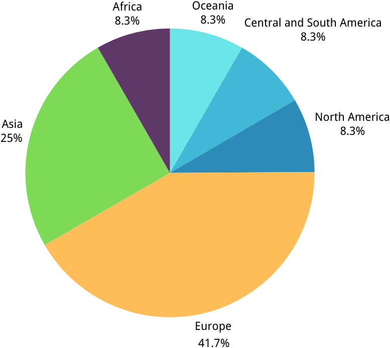
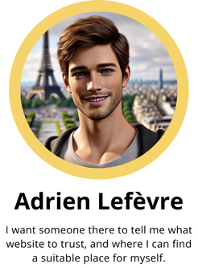
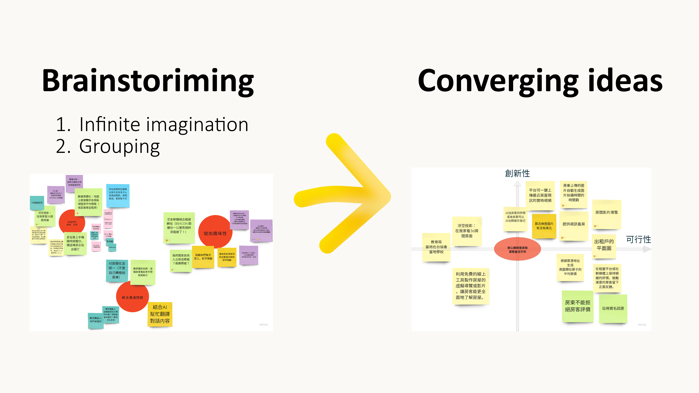
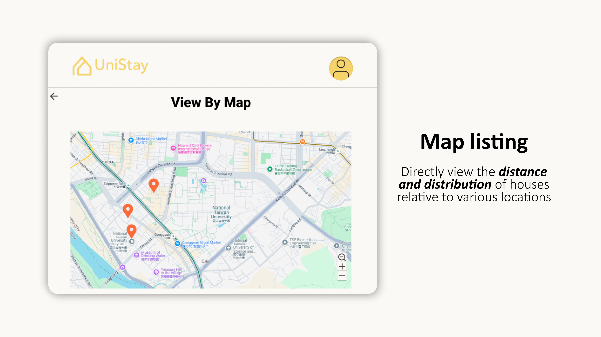
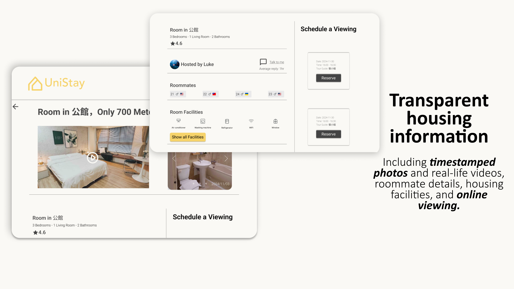
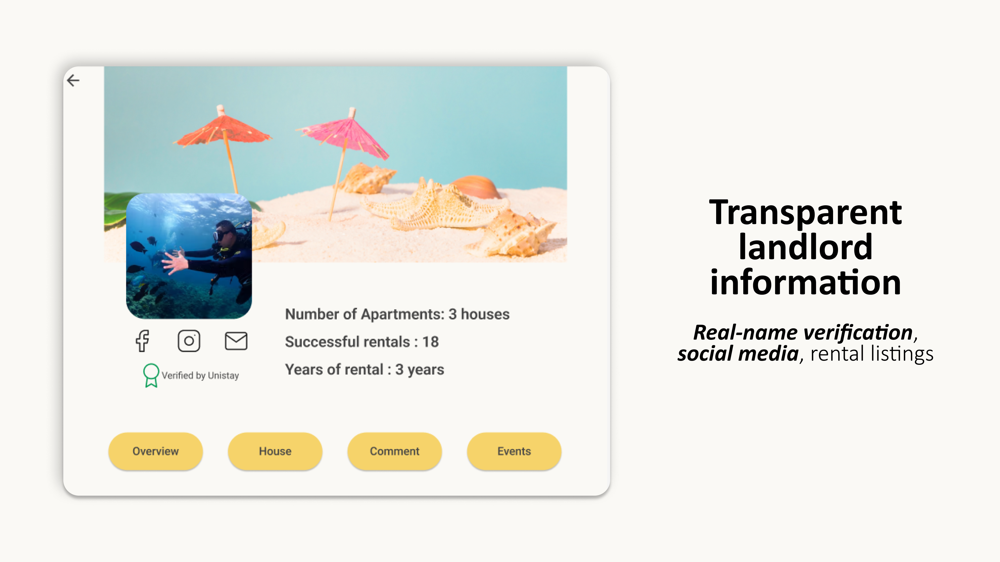
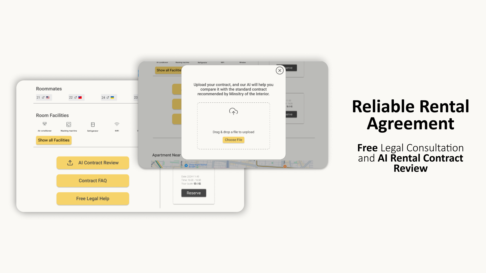

01 · The Problem
Foreign students can't tell who to trust
Taipei's rental market is scattered. Most listings live on local platforms or Facebook groups, in Chinese. International students arrive without language access, without a credit history that landlords recognize, and without a way to verify whether a listing or a landlord is real.
Multiple news reports over the last decade have flagged rental scams. Hidden fees and inflated electricity charges are common. There is no central place where a student can check a landlord before signing.
-
Listings don't match reality
Online photos and descriptions often differ from the actual room. Students fly in to find a different space.
-
Landlords are invisible
There is almost no public information about the person renting the room. Trust has nowhere to attach.
-
Leases are a gamble
Tenants don't know if the contract protects them. Most can't read the Chinese version anyway.
-
Search filters are too weak
Finding a place takes hours of scrolling because filters don't match what students actually care about.
Foreign students unfamiliar with Taiwan's rental market and legal protections need a platform with clear and transparent landlord, property, and legal information. Trust is the most important factor when renting in a foreign country.
02 · Research
Five methods, one question: where does trust break?
We mixed secondary research with primary interviews so the numbers and the stories check each other. Every design decision later in the project points back to one of these.
Ministry of Education data on international student growth. News coverage of rental scams over the past decade.
591, Facebook groups, Airbnb, My Room Abroad, NTU International House. Compared landlord profiles, verification, reviews, and legal support.
26 participants, even gender split, 60% from Europe and Asia, matching the actual international-student population in Taiwan.
11 international students plus 3 landlords. Covered information gathering, platform choice, the decision moment, and life after move-in.
Coded interview transcripts in two passes to surface recurring themes and rank them by frequency and severity.


03 · Who We're Designing For
One persona, one core need
We combined interview themes into a single persona. Every pain point above points to the same underlying need: a way to verify what you're being told, before you sign anything.

Non-local student under 35, arriving in Taipei from Europe or Asia to study at a Taiwanese university. Reads English, not Chinese. Searches for housing online from their home country, weeks before they fly in.
"I'm picking a place I've never seen, from a landlord I've never met, in a language I can't read. How do I know any of this is real?"
04 · Ideation & 1.0 Prototype
From brainstorm to first wireframe
We ran an open brainstorm, then sorted ideas on a feasibility-vs-innovation quadrant. Anything high feasibility moved into the first wireframe. The wireframe went straight back to the same interviewees for functionality testing.


05 · Usability Testing
What broke, and what we changed
We brought the same 11 interviewees back. Each rated 8 key design elements on importance and satisfaction (1–10), then talked us through what was clear and what was not. Two patterns came out fast.
- The map needed to show distance to school clearly, not just location.
- Wording like "Online Contract Review" and "Legal Consultation" confused users. Labels rewritten.
- Filters needed three layers, not one: interface, feature options, and price.
- A landlord's self-introduction did not increase trust. Removed from the 2.0.
- Users wanted a verification system — something the platform vouches for, not something the landlord says about themselves.
- Recommendations from trusted sources (universities, past tenants) carried far more weight than badges.
06 · 2.0 High-fidelity Prototype
The platform, rebuilt around trust
Two days of focused rebuild after the second round of testing. Every screen ties back to a specific finding from the interviews — verified landlords on the listing page, a contract page in English, a landlord page that shows third-party signals instead of self-claims.





07 · Reflection
What I'd take into the next project
- Letting the user say "trust" first, then organizing every feature around that word. The team stopped arguing about features once we agreed the underlying job was trust.
- Bringing the same 11 interviewees back for testing 2.0. Familiarity with the product made their feedback sharper and faster.
- Quantifying pain points after the qualitative round. Numbers helped us pick what to build first without losing the human reasoning behind it.
- We talked to 3 landlords but the timeline pushed us to ship a tenant-only design. A two-sided product needs both sides in the prototype from day one.
- Survey reach skewed toward students already in Taipei. Next time I'd recruit pre-arrival students directly, since that's where the trust problem actually lives.
- The verification system was a finding, not a design. I'd prototype the verification flow itself, not just show a badge on the page.